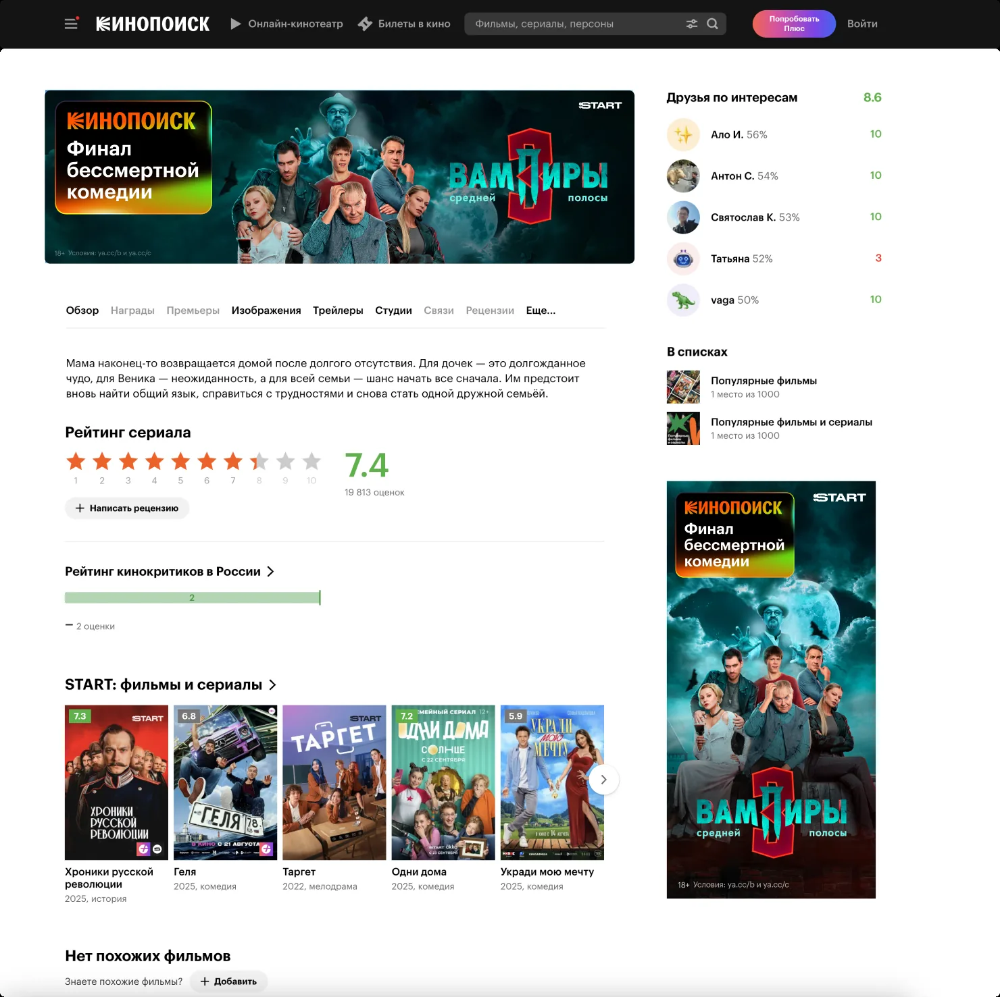
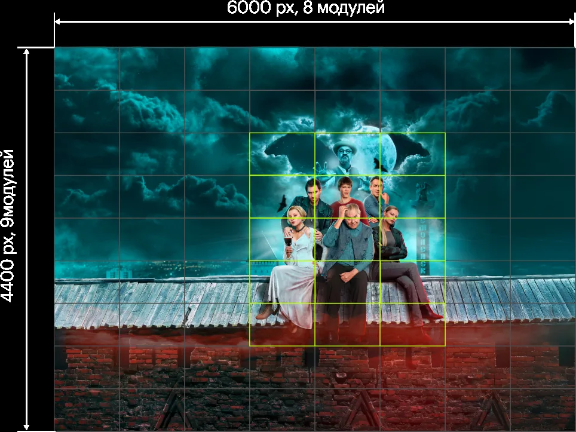
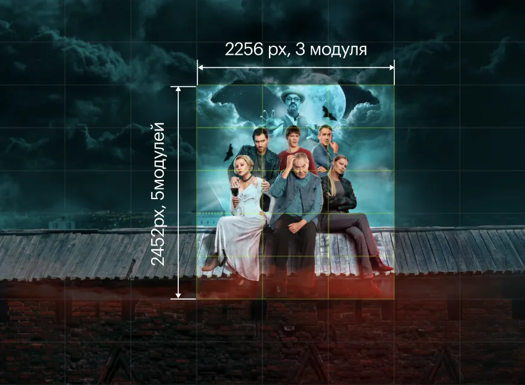
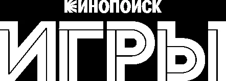
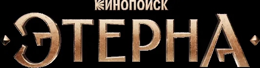
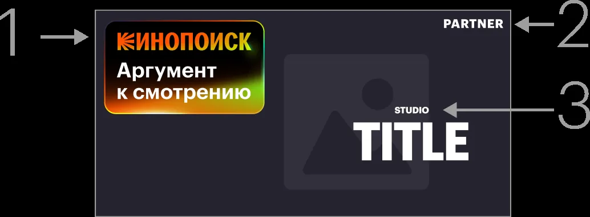

Баннер
Реклама в энциклопедии Кинопоиска поможет дотянуться до релевантной аудитории в момент, когда ей это наиболее актуально. Пользователи уже читают статьи, изучают фильмы и актёров, они ищут и выбирают, что бы им посмотреть — а значит, активнее и охотнее взаимодействуют с рекламным размещением вашего проекта. Для них это ещё одна полезная рекомендация, а не отвлекающий фактор.

2 000 000+
контактов в неделю
Из искателей в зрители
пользователи видят баннеры в момент принятия решения, что посмотреть, так что ему легче сделать выбор
В центре внимания
баннеры размещаются в приложении, мобильной и веб-версии Кинопоиска на главной и на страницах проекта и актёров
CTR >1%
средние данные для кампаний, запущенных на 3 недели
О формате
Что можно размещать на баннерах
С помощью баннеров можно:
- рассказать о будущей премьере заранее;
- подсветить уже вышедший проект;
- привести в покупку билетов на тайтлы, которые вышли или скоро выйдут в кино;
- подсветить промостатью или спецпроект в разделе Медиа.
Какие бывают баннеры
Сайт Кинопоиска
| Attribute | Attribute | Value | Value |
|---|---|---|---|
| Attribute | Content width | 860 pt | 860 pt |
| Attribute | Content width | 860 pt | 860 pt |
| Attribute | Content width | 860 pt | 860 pt |
| Attribute | Content width | 860 pt | 860 pt |
Условия и сроки размещения
Сроки размещения согласовываются индивидуально под каждый проект и с каждым партнёром. Единого фиксированного окна нет — планировать сроки нужно заранее вместе с командой Кинопоиска. Каждый баннер должен быть брендирован бейджем Кинопоиска — подробнее об этом далее.
Макет и бейдж Кинопоиска
Что такое и зачем нужен бейдж
На всех баннерах в энциклопедии Кинопоиска используется вариант макета с брендированным бейджем. Бейдж позволяет фокусно собрать в одном месте всю информацию о контенте: аргумент к смотрению, брендинг, подписку и оффер. Так пользователь сразу понимает, что это за проект и где его смотреть. Текст в бейдже ёмко описывает суть проекта — он может тизерить сюжет или подсвечивать главных актёров.
Как собирать макет баннера
Фокус внимания — всегда на контенте. Ему выделяется максимум места на макете. Всё остальное (логотипы, тексты, служебная информация) не должно перетягивать внимание с кейвижуала.
Баннер содержит не больше трёх бренд-блоков:
- Логотип Кинопоиска — в левом верхнем углу макета, в окне бейджа.
- Монохромный логотип партнёра — в правом верхнем углу макета.
- Логотип студии-производителя контента — над логотипом тайтла (опционально).
Подписка и оффер
Почти весь контент на Кинопоиске доступен по подпискам и опциям, поэтому на макете важно всегда указывать их название. Оффер — опционально.
Правила формулировки:
- используется единая формулировка — «В подписке / мультиподписке»;
- далее идёт название подписки в текстовом наборе;
- без элементов брендинга: без цвета, логотипов, знаков, глифов и прочего.
Требования к материалам
Что нужно предоставить
Чтобы ресайзы постера выглядели корректно, партнёр передаёт следующий комплект:
- Фон в соотношении 1,5×1.
- Логотип тайтла.
- Логотип студии-производителя — если есть.
Важно
Не нужно вшивать логотип партнёра в материалы — он проставляется автоматически.
Кейвижуал и композиция
Требования к построению кейвижуала:
- композиция должна быть центральной;
- вокруг ключевого изображения нужно оставить технические поля.
Размер файла: 6000х4400px Количество модулей: 8x9

Зона ключевого изображения внутри поля: 2256x2452px Количество модулей: 3x5 со смещением на один модуль вправо

Зачем это нужно: центральная композиция и технические поля обеспечивают корректный ресайз в экстра-горизонтальные и экстра-вертикальные форматы, а также дают место для размещения логотипа тайтла и бейджа Кинопоиска.
Рекомендации
- планируйте композицию модулями;
- проверяйте макет в готовом шаблоне PSD до сдачи.
Скачать темплейт в PSD
Требования к логотипам
Логотип производителя
- белая монохромная версия;
- уникальный графический стиль, наследующий стилистику логотипа тайтла.
Вариант 1. Логотип производителя контента в белой монохромной версии

Вариант 2. Логотип производителя выполнен в стиле лого тайтла

Логотип производителя явлется четвёртым по значимости после логотипа тайтла (3), логотипа Кинопоиска (1) и логотипа партнёра Кинопоиска (2)

Передавать логотип нужно отдельным элементом, чтобы его можно было вписать в архитектуру элементов макета.
Если у логотипа тайтла есть альтернативные версии — например, вертикальные или горизонтальные — их тоже нужно приложить.